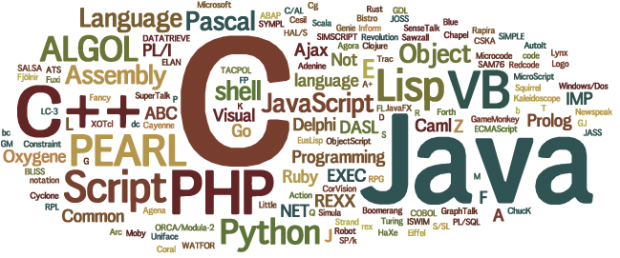

프로그램이란? |
언어의 종류 |
언어 번역 종류
프로그램 언어

프로그램 이란?
프로그램 언어란 컴퓨터에게 명령을 주기위해 사용하는 언어를 말한다.
프로그램 언어도 매우 많은 종류가 있다.
프로그램 언어는 실행하기 위해 컴퓨터의 언어로 변역이 되어야 한다.

언어 종류
- C언어
- Python
- Java
- Html
- Javascript
- VB
언어 번역 종류
- 컴파일러
컴파일러는 코드를 전체 번역한 후 실행.
- 인터프리터
인터프리터는 한 줄씩 번역하며 실행한다.
프로그램이란? |
언어의 종류 |
언어 번역 종류